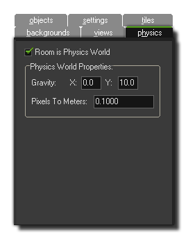

The addition of physics to GameMaker:Studio means that you can add a much greater level of realism to your games, with better collisions and movement than ever before. However
this is not always necessary, nor is it the default behaviour for your game. If you do wish to use physics, you must tell GameMaker:Studio this and set up some basic prameters, both
in your object resources (see - More about Objects : Physics) and in your rooms.

Before your room can use physics you must tick the option at the top of this tab labelled Room is Physics World. Once you have done that you can then continue on to set up the
Physics World Properties, which are some basic properties that you must have pre-defined before your room will allow phyiscs objects to work as such. For a more precise control over
the world you can use code (see - The Physics Functions for more information).
The next thing you must do is set up the Gravity of the world, and the strength and direction of this is calculated as a
vector of the x/y position that you set. So, an x of 0 and a y of 1 will set the gravity direction as being down with a force of 1 metre per second (for a more detailed explanation see -
The Physics World : Gravity). Finally you must set the ratio of Pixels To Meters for
GameMaker:Studio to use as a base for all its physics calculations. This is because the physics functions work on real-world measurements, which is why we must set this value, and you'll want
to adjust this setting until the average pixel size of the objects you are using translates roughly into simulated physics objects of an appropriate size.